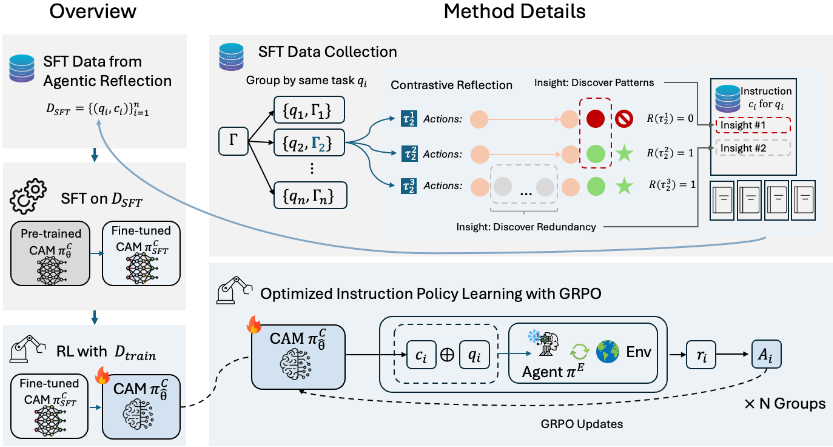
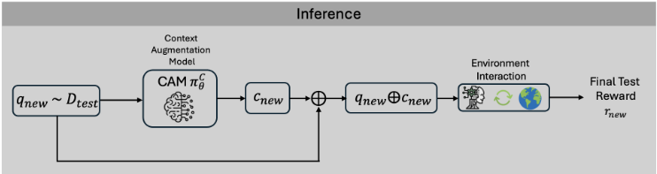

CLEAR：通过 Agentic Reflection 的经验对比学习实现上下文增强
LLM Agent 的上下文工程方法（RAG、ACE、GEPA 等）大多复用历史经验中静态、通用的指导，执行 Agent 需自行推理如何适配当前任务，在模型推理能力较弱或任务差异大时收益有限甚至为负。CLEAR 训练一个独立的上下文增强模型（CAM）：先让配备 shell 工具的 reflection Agent 对同一任务的多次成功/失败轨迹做对比分析，生成任务级指导作为 SFT 数据；再用 GRPO 强化学习，以执行 Agent 的任务回报为奖励信号，只更新 CAM 参数、冻结执行 Agent。在 AppWorld 上任务完成率从 72.62% 提升至 81.15%，WebShop 子集平均奖励从 0.68 升至 0.74，并在使用通用提示的情况下超过使用基准专属提示的 ACE；CAM 可跨执行模型迁移，推理时仅增加约 1.2 秒调用延迟。对团队的启示是'轨迹对比反思→生成式任务级上下文'可替代纯检索式复用，但完整方法需要 SFT+RL 训练基础设施。
现有上下文工程方法主要依赖从历史经验生成并检索复用的上下文（RAG、ACE、Dynamic Cheatsheet、GEPA 等），这类指导是静态、通用的，并非针对具体未来任务实例定制；执行 Agent 必须额外推理如何将其适配到当前任务，当底层 LLM 推理能力有限或新任务与历史任务差异较大时，存储的指导可能仅弱相关，RAG 检索甚至会引入噪声（实验中 RAG 基线在 DeepSeek-V3.1 上低于无增强基线）。此外 RAG 还面临知识库索引策略、query rewriting、检索流水线可靠性等工程难题。
三阶段训练框架：(0) 对训练集每个任务执行 m=6 次收集分组回放缓冲区，由配备 shell 工具的 reflection Agent（Claude-Sonnet-4 + Strands Agents）对成功/失败轨迹做对比分析，生成任务级指导 c_i 构成 SFT 数据，并通过 6 选 3 的组合采样将数据扩充 20 倍；(1) 以 Qwen3-32B 初始化 CAM 做 SFT（LLAMAFACTORY，8×B200）；(2) 用 GRPO（Verl 框架）做 RL，奖励为执行 Agent 携带 q⊕c 运行任务所得回报，仅更新 CAM 参数、执行 Agent 冻结。推理时新任务先经 CAM 生成上下文再拼接进执行 Agent 提示；执行 Agent 可为专有模型（Claude-Sonnet-4）或开源模型（DeepSeek-V3.1），经 Amazon Bedrock / AgentCore Runtime 并行采集轨迹与计算奖励。
AppWorld TEST-N：TGC 从基线 72.62% 提升至 81.15%（Claude-Sonnet-4 执行 Agent）
WebShop-40k 子集：平均奖励从 0.68 提升至 0.74
对比 ACE：TGC +6.75、SGC +7.74，且 ACE 使用了 AppWorld 专属提示而 CLEAR 全流程使用基准无关的通用提示
消融实验：去除 RL、去除对比学习（单轨迹生成 SFT 数据）、不做 SFT 三种变体均显著劣于完整 CLEAR，三个阶段各有非平凡贡献（正文为定性结论，具体数值在 Table 3）
延迟：CAM 平均增加 1.2 个执行轮次、1.2 秒调用延迟，任务总时长平均增加 13.8 秒（CAM 经 vLLM 部署在 8×NVIDIA B200 上）
可迁移性：CAM 训练数据全部来自 Claude-Sonnet-4 轨迹，换用 DeepSeek-V3.1 执行 Agent 时 TGC 仍 +1.68、SGC +5.35；同设置下 RAG 基线甚至低于无增强基线
与 ACE/GEPA/MIPRO 等 training-free 自动提示优化方法不同，CLEAR 做参数化学习：训练专用 CAM 将新任务直接映射为已适配的可执行上下文（SFT+RL），而非最近邻检索或纯提示层更新；其 reflection Agent 是带 shell 工具、可选择性读取大轨迹文件的 agentic 系统，并对同一任务的多条轨迹做对比推理，提示模板跨基准通用。论文自述创新点在于任务级适配与上下文增强的集成，而非新的对比学习目标本身；且不修改执行 Agent 权重，适用于专有与开源模型。
相关度级别：high
命中能力域：3.1 上下文工程与记忆 | 3.2 提示工程 | 3.3 Agent 架构与工具使用 | 3.5 评测与可靠使用
理由：直接命中 3.1（上下文工程是论文核心主题：生成式上下文增强、reflection Agent 提示中包含针对 100K-500K+ token 大轨迹文件的上下文窗口管理策略）与 3.2（与 GEPA/MIPRO/ACE 等自动提示优化方法直接对比并给出'静态通用 playbook vs 任务级生成式上下文'的边界分析）；3.3 相关体现在带工具的 agentic reflection 与执行 Agent 可靠性提升；3.5 相关体现在 AppWorld/WebShop 评测流程与延迟/开销量化。核心洞察对团队很有价值：检索式上下文把适配负担留给执行 Agent，弱模型下甚至负收益；'轨迹对比分析→任务级指导'的 Phase 0 流水线即使不训练 CAM 也可直接借鉴。需注意完整方法需要 SFT+RL 训练 32B 模型，超出团队'不训练模型'的边界，属于可降级采用的高相关方法。
建议动作：深入精读并做内部分享
arXiv:2604.07487v2 [cs.AI] 2026年9月11日
Linbo Liu Guande Wu Han Ding Yuzhe Lu Zhichao Xu Huan Song Panpan Xu
AWS AI
大语言模型智能体依赖有效的模型上下文来获取与任务相关的信息以支持决策。许多现有的上下文工程方法主要依赖于从过去经验中生成的上下文，以及复用这些上下文的检索机制。然而，从过去任务中检索到的上下文必须由执行智能体加以调整才能适应新情况，这给底层大语言模型（LLM）带来了额外的推理负担。为解决这一局限，我们提出了一种基于经验对比学习与智能体反思（Contrastive Learning of Experience via Agentic Reflection，CLEAR）的生成式上下文增强框架。CLEAR 首先利用一个反思智能体对过去的执行轨迹进行对比分析，并为每个观察到的任务总结出有用的上下文。随后，这些总结被用作监督微调数据来训练一个上下文增强模型（Context Augmentation Model，CAM）。接着，我们使用强化学习进一步优化 CAM，其中奖励信号通过运行任务执行智能体获得。通过学习生成针对特定任务的知识，而非从过去经验中检索知识，CAM 能够生成更贴合当前任务的上下文。我们在 AppWorld 和 WebShop 基准测试上进行了全面评估。实验结果表明，CLEAR 持续优于强大的基线方法。与基线智能体相比，CLEAR 在 AppWorld 测试集上将任务完成率从 72.62% 提升至 81.15%，并在 WebShop 的一个子集上将平均奖励从 0.68 提升至 0.74。
为了解决这一局限性，我们提出了一种上下文增强（context augmentation）框架，即通过智能体反思（Agentic Reflection）进行经验对比学习（Contrastive Learning of Experience，CLEAR）。CLEAR 首先利用一个反思智能体（reflection agent）对过去的经验回放进行对比分析，并为每个任务总结出有用的上下文。随后，所得的上下文被用作监督微调（Supervised Fine-Tuning，SFT）数据来训练一个上下文增强模型（Context Augmentation Model，CAM）。在 SFT 阶段之后，我们进一步使用强化学习（Reinforcement Learning，RL）对 CAM 进行优化，其中奖励信号通过执行任务执行智能体（task execution agent）来获得（见图 1）。此外，CAM 的选择可以是轻量级的，并且与昂贵的执行智能体的选择无关，为整个系统增加的开销可以忽略不计。
训练好的 CAM 能够提供有助于解决未来任务的额外上下文，这些上下文将被集成到任务执行智能体的提示（prompt）中，如图 2 所示。重要的是，CLEAR 无需对执行智能体所基于的底层大语言模型（LLM）进行参数化训练，这类模型通常是专有模型，无法获取其权重。相反，CLEAR 只需训练较小的 CAM。因此，CLEAR 是一个统一框架，既可应用于基于专有基础模型构建的 LLM 智能体，也可应用于基于开源基础模型构建的 LLM 智能体。
我们的 CLEAR 框架具有以下贡献：
一种新颖的 RL 训练框架，它将 CAM 与执行智能体耦合起来以生成 rollout，同时仅更新 CAM 的参数。
上下文工程（Context Engineering）。上下文工程旨在推理时为 LLM 智能体提供与任务相关的信息。基于检索的方法，例如检索增强生成（RAG）（Lewis et al., 2020; Gao et al., 2023），通过检索外部证据来改善事实依据，而“先生成后读取”（generate-then-read）变体则进一步将参数化生成与检索相结合以提升覆盖范围（Yu et al., 2022）。近期以智能体为中心的方法，包括 ACE（Zhang et al., 2025）和 MIPRO（Opsahl-Ong et al., 2024），维护着从先前执行中提炼出的、不断演化的操作手册（playbook），而 GEPA（Agrawal et al., 2025）则通过反思式进化来优化提示。与这些方法相比，CLEAR 学习一个专用的上下文增强模型，通过 SFT+RL 将新任务直接映射为可操作的上下文，而非依赖最近邻检索或纯粹的提示级更新。这将更多的适配工作转移到可训练模型中，并减轻了执行智能体重新解读所检索到的过往经验的负担。
LLM 微调（LLM Fine-Tuning）。对大语言模型进行后训练（post-training）的主流范式遵循两阶段流程：先在精心整理的示范样本上进行 SFT，随后通过 RL 进一步使模型行为与期望目标对齐（Ouyang et al., 2022; Bai et al., 2022）。RL 阶段已通过多种算法实现，包括 PPO（Schulman et al., 2017），其借助学习到的价值函数优化裁剪的代理目标函数；DPO（Rafailov et al., 2023），其通过直接在偏好对上进行优化而绕过显式的奖励建模；GRPO（Shao et al., 2024），其通过计算组相对优势来完全省去评论家模型；以及其他许多算法（Zhang et al., 2021; Ahmadian et al., 2024; Yu et al., 2025; Yue et al., 2025; Zheng et al., 2025）。CLEAR 遵循相同的先 SFT 后 RL 的两阶段训练范式，并且与 RL 算法的具体选择无关。在我们的实验中，我们采用 GRPO 进行策略优化。
将强化学习应用于大语言模型（LLM）的实践随着基于人类反馈的强化学习（RLHF）（Ouyang et al., 2022; Leike et al., 2018; Askell et al., 2021; Bai et al., 2022; Rafailov et al., 2023）而流行起来。在该框架中，LLM 被建模为一个随机策略 π θ ( y | x )，该策略以自回归方式生成词元。首先收集人类偏好数据用于训练奖励模型，随后通过强化学习利用该奖励模型来优化策略。
最近，基于 RL 的后训练已被扩展用于增强智能体场景中的推理能力、工具调用以及长时程决策能力。正如第 3.2 节所介绍的，这些方法将文本生成视为带有下游任务奖励的序贯决策过程，而非纯粹的词元级预测。
随着大语言模型（LLM）能力的日益增强，将其作为智能体部署到序贯决策场景中已成为一个重要的研究方向（Nakano et al., 2021; Yao et al., 2023b）。我们通过将 LLM Agent 建模为部分可观测马尔可夫决策过程（Partially Observable Markov Decision Process, POMDP）中的策略 π 来形式化这一设定，该过程由如下元组定义
其中 S 为潜在状态空间，A 为动作空间，O 为观测空间，P ( s t +1 | s t , a t ) 为状态转移动力学，R 为奖励函数，γ 为折扣因子。
初始任务描述 q 从任务分布 q ∼ D 中采样得到，并由此产生一个状态 s 0 。基于 q 和历史观测，智能体执行一个动作，并从环境中接收一个观测。将智能体的历史记为
在每个时间步 t ，任务执行 LLM Agent π E θ ( a t | h t ) 读取完整历史 h t 并生成下一个动作 a t ∈ A 。环境随后根据 P 转移到新状态 s t +1 ，并返回后续观测 o t +1 ∈ O 。
该过程持续进行，直到交互在 T 步后终止，从而得到一条完整的回合轨迹
随后，为整条轨迹赋予一个标量奖励 r = R ( τ ) ，以反映智能体在整个回合中行为的总体质量。在本工作中，我们提出一种上下文增强方法，将辅助上下文 c 添加到 q 中，从而提升在 D 上的期望奖励。
许多实用的基于大语言模型（LLM）的智能体（例如 (Yang et al., 2024; Xia et al., 2025; Liu et al., 2025b)）构建于 OpenAI GPT 模型 (Singh et al., 2025)、Anthropic Claude (Anthropic, 2025a,b) 以及 Google Gemini (Team et al., 2023) 等专有基础模型之上。尽管这些智能体系统通常通过 Strands Agents 2、LangGraph 3 和 OpenHands (Wang et al., 2025) 等开源智能体框架进行部署，但其底层基础模型仍然是闭源的。因此，其内部参数无法访问，限制了权重层面适配的可行性。
在本工作中，我们提出一种统一的上下文增强框架，该框架无需修改 LLM 智能体的权重即可运行。我们的方法既兼容专有模型，也兼容 Qwen (Yang et al., 2025)、DeepSeek (Liu et al., 2025a)、Olmo (Olmo et al., 2025) 和 Kimi (Team et al., 2025) 等开源模型。我们不更新模型参数，而是通过基于过往经验的对比学习来增强上下文，从而提升智能体性能。当任务执行智能体 π E ( · ) 执行任务 q 时，我们使用由上下文增强模型（CAM）生成的附加上下文 c 对其任务描述 q 进行增强。形式化地，我们定义一个回放缓冲区
作为过往轨迹及其对应结果奖励的集合，其中 τ i 定义于公式 (2)。设 q ∼ D 为从任务分布 D 中采样得到的初始任务描述。我们定义一个上下文增强模型，将 q 映射为辅助上下文 c，该上下文在由 π E 进行动作生成之前被附加到 q 上。换言之，执行智能体 π E 将以 q ⊕ c 作为其任务描述，其中 ⊕ 表示拼接。
2 https://strandsagents.com/latest/
3 https://www.langchain.com/langgraph
我们将 CAM 定义为由 θ 参数化的 π C θ ( · )。给定任务 q，该模型生成附加上下文 c = π C θ ( q )。我们的目标是从 Γ 中学习一个最优的 π C θ ( · )，使得任务执行智能体 π E 在 D train 上的期望回报最大化。
为实现这一目标，我们提出 CLEAR（ C ontrastive L earning of E xperience via A gentic R eflection），这是一个结合对比学习、智能体反思、监督微调（SFT）与强化学习（RL）的三阶段训练框架，用于优化 CAM π C θ 。在阶段 0 中，我们采用一个反思智能体对过往执行轨迹进行对比分析，并为 SFT 生成训练数据。在阶段 1 中，我们使用 SFT 对一个开源 LLM 进行微调，作为预热阶段。在阶段 2 中，我们进一步通过 RL 对模型进行优化，以直接最大化任务执行智能体的期望回报：
直观上，该目标鼓励 CAM 生成有用的上下文，从而提升执行智能体的期望性能。一项同期工作 (Asawa et al., 2026) 设计了类似的强化学习（RL）流程来训练顾问模型，但并未使用智能体反思和监督微调（SFT）进行对比学习。然而，正如第 A 节所讨论的，CLEAR 中的全部三个阶段都能带来非平凡的性能提升，使其成为一个更全面的智能体改进框架。下面我们详细介绍 CLEAR。
仅从单一轨迹中学习不足以实现稳健的智能体改进。单次执行只能提供关于决策过程的狭窄且可能含噪的视角。因此，改进应当利用同一任务的多个轨迹。消融实验研究见第 A 节。
为实现这一目标，我们引入一个反思智能体 π R，它对回放缓冲区 Γ 执行对比分析以进行数据生成。其目标是提取能够解释多个轨迹之间行为差异的高价值洞见。为实现可扩展的分析，该反思智能体配备了一个 shell 工具，使其能够有选择地读取轨迹文件。当轨迹规模较大、无法完整加载进上下文时，这一设计尤为重要。π R 的提示词见第 F 节。

为了充分发挥对比分析的优势，我们对每个任务执行多次，以获得对应于同一任务实例的一组轨迹。这些轨迹刻画了多样的执行行为与结果，为通过对比比较识别任务特定的决策模式提供了丰富资源。
具体而言，对于每个任务实例 q i ∼ D train ，我们将该任务执行 m 次，得到轨迹 τ 1 i , . . . , τ i m 及其对应的奖励 r 1 i , . . . , r i m 。随后，这些轨迹被组织成分组回放缓冲区 Γ i = { ( τ 1 i , r 1 i ) , . . . , ( τ i m , r i m ) } 。我们通过应用反思智能体 π R 来分析回放缓冲区 Γ i 并总结有用的上下文，从而得到 c i = π R (Γ i , q i ) 。直观地说， c i 可以被视为完成 q i 的一条附加指令。至此，所生成的数据对 ( q i , c i ) 构成了一个高质量的 SFT 数据集，该数据集将用于训练增强模型 π C θ 。
在本小节中，我们采用在 LLM 对齐中被广泛使用的标准后训练（posttraining）范式（Ouyang et al., 2022; Guo et al., 2025; Liu et al., 2025a; Yang et al., 2025）：一个由 SFT 后接 RL 组成的两阶段框架。
SFT。利用前文所述的数据收集流程，我们得到监督数据集 D SFT = { ( q i , c i ) } i 。我们使用一个以 θ 为参数的预训练 LLM 来初始化上下文增强模型 π C θ 。随后，我们在监督数据集 D SFT 上对该模型进行微调，得到更新后的模型 π C SFT 。所得模型将作为后续 RL 阶段的初始化。
RL。在此阶段，我们使用强化学习进一步优化 π C SFT ，以直接最大化期望任务奖励。训练目标由公式 (3) 给出。注意：(i) 在公式 (3) 中，π C θ 中的参数 θ 是唯一可训练的参数，而执行智能体 π E 将被冻结。(ii) π C θ 的奖励信号与使用 q ⊕ c 运行执行智能体 π E 所获得的奖励相同，其中 c ∼ π C θ ( q ) 。我们采用策略梯度方法对 π C θ 进行优化。具体而言，在我们的实验中，我们采用 GRPO 作为策略优化算法。工作流程的示意见图 1。
MIPRO (Opsahl-Ong et al., 2024), GEPA (Agrawal et al., 2025) and ACE (Zhang et al., 2025) are representative approaches for automatic prompt optimization. We refer to these methods as the compared methods throughout this section. While these approaches have demonstrated promising results, our CLEAR framework differs from the compared methods in several key aspects.

First , all the compared methods are trainingfree frameworks that relies entirely on off-the-shelf LLMsacting as the reflector and curator to generate the playbook and instructions. In contrast, CLEAR performs parametric learning: we train a context augmentation model π C θ using SFT followed by RL.
Second , the reflection agent π R used in Phase 0 of CLEAR is inspired by the compared methods but differs substantially in design. Reflectors in the compared methods are implemented as a single LLM call, whereas our π R is an agentic system equipped with tools for trajectory inspection and analysis. Moreover, our π R explicitly performs contrastive reasoning over multiple trajectories to extract useful instructions, which is not a focus of the compared methods .
Third , the prompt templates used by the compared methods for the reflector and curator are benchmark-specific. For example, ACE's prompts include explicit instructions tailored to the AppWorld tasks and are not designed to generalize across benchmarks 4 . In contrast, the prompt template used by our reflection agent is general and benchmark-agnostic (see Section F). Despite ACE employing benchmark-specific prompt engineering for AppWorld, CLEAR consistently outperforms ACE as shown in Table 1.
We also discuss the comparison to RAG in Section C.
4 https://github.com/ace-agent/ace-appworld/ tree/main/experiments/prompts
为了评估我们的 CLEAR 框架，我们在 AppWorld (Trivedi et al., 2024) 和 WebShop (Yao et al., 2022) 数据集上进行了实验。
我们在此介绍智能体数据收集阶段的实验设置，并将监督微调（SFT）和强化学习（RL）的训练细节留至第 E 节。
执行智能体。我们采用 Strands Agents 框架作为我们智能体系统的骨干。Strands Agents 是一个轻量级但功能强大的 SDK，用于以模型驱动的设计范式构建和部署 AI 智能体。它支持广泛的应用场景，从简单的对话助手到复杂的自主工作流，并能从本地开发无缝扩展至生产环境。我们使用通过 Amazon Bedrock 5 访问的 Claude-Sonnet-4 (Anthropic, 2025a) 和 DeepSeek-V3.1 (Liu et al., 2024) 作为执行智能体 π E 的基础模型。我们利用上述智能体框架作为执行智能体来运行 AppWorld 和 Webshop 的训练数据集。为了加速智能体执行，我们将智能体部署到 Amazon Bedrock AgentCore 6 Runtime 上，该运行时会并行启动多个容器以支持高并发的 rollout 执行。我们设置 m = 6，即对于训练集中的每个任务，我们运行智能体 6 次以收集轨迹。随后，我们使用其官方评估工具计算每条轨迹的结果奖励。
反思智能体。我们使用 Strands Agents 框架并结合 Claude-Sonnet-4 构建一个用于对比分析的反思智能体。反思智能体所使用的完整提示见第 F 节。此外，当 SFT 数据集规模不足时，我们利用一种组合式数据增强技术来扩大其规模，详见第 E 节。
5 https://aws.amazon.com/bedrock/
6 https://aws.amazon.com/bedrock/agentcore/
| Method. | TGC ↑.Avg | TGC ↑.Pass@3 | SGC ↑.Avg | SGC ↑.Pass@3 |
|---|---|---|---|---|
| Baseline | 72.62(2.59) | 86.9 | 52.38(2.73) | 66.07 |
| RAG | 72.02(2.15) | 86.31 | 54.67(3.72) | 71.43 |
| ACE (Zhang et al., 2025) | 74.40(3.57) | 85.71 | 58.93(6.19) | 73.21 |
| GEPA (Agrawal et al., 2025) | 75.99(0.74) | 89.88 | 57.14(3.86) | 78.57 |
| MIPRO (Opsahl-Ong et al., 2024) | 74.40(1.46) | 88.1 | 55.36(1.46) | 80.36 |
| CLEAR (ours) | 81.15 (2.48) | 91.67 | 66.67 (4.49) | 82.14 |
| Method. | TGC ↑.Avg | TGC ↑.Pass@3 | SGC ↑.Avg | SGC ↑.Pass@3 |
CAM。CAM π C θ ( · ) 由从 HuggingFace 下载的 Qwen/Qwen3-32B 模型 (Yang et al., 2025) 初始化。SFT 和 RL 的细节见第 E 节。
本小节报告在 AppWorld 上的实验结果。我们使用 TRAIN 划分作为训练集 D train，使用 TEST-N 划分作为评估集 D test。这两个划分互不相交，并遵循原论文定义的官方数据集划分方式，从而确保评估过程中不会发生数据泄露。对于执行 agent，我们使用原始系统提示（system prompt），该提示可在官方 AppWorld 仓库 9 中获取。
指标。我们采用 AppWorld（Trivedi et al., 2024）中的任务目标完成率（Task Goal Completion, TGC）和场景目标完成率（Scenario Goal Completion, SGC）作为评估指标。TGC 定义为 agent 通过 AppWorld 基准测试（benchmark）所提供的全部评估测试的任务所占的百分比。SGC 衡量的是 agent 通过场景内每个任务的全部评估测试的任务场景所占的百分比。我们在表 1 中报告了 TGC、SGC（3 次独立运行的平均值）及其 pass@3 率。
8 https://github.com/stanfordnlp/dspy
9 https://github.com/StonyBrookNLP/appworld/ blob/main/experiments/prompts/react_code_agent/ _legacy_instructions.txt
| Method | Avg. Reward | Std. |
|---|---|---|
| Baseline | 0.6799 | 0.0119 |
| RAG | 0.7252 | 0.0076 |
| CLEAR (ours) | 0.7406 | 0.0044 |
| Method | Avg. Reward | Std. |
如前文所述，我们利用 Amazon Bedrock AgentCore 来实现可扩展的 rollout 收集。然而，这一设置对 Docker 镜像大小施加了一项约束，使其与原始 WebShop benchmark 无法兼容：完整的 WebShop 环境包含一个涵盖数百万商品的本地搜索索引，其规模超出了 AgentCore Runtime 所强制执行的镜像大小上限。为解决这一问题，我们从原始商品池中随机抽取了 40,000 个商品来构建一个轻量级搜索索引，从而形成了 WebShop40k 变体。随后，我们对任务集合进行了过滤，仅保留那些真实目标商品存在于该 40k 子集之内的任务，以确保奖励计算与原始 benchmark 的设定保持完全一致。我们注意到，WebShop-40k 可能本质上比原始 benchmark 更容易，因为搜索空间的缩小降低了商品检索的难度。对于基线 agent，我们精心编写了一个系统提示词，其中描述了任务目标、可用工具及其相应的说明。
由于 ACE 并未针对 WebShop 数据集提供特定于 benchmark 的提示词，因此我们不报告 ACE 在 WebShop-40k 上的结果。其他实验设置与 AppWorld 评估相同。结果报告于表 2 中。
如表 1 所示，CLEAR 在所有模型和所有指标上均始终优于所有基线，且在数据生成和训练流程中未使用任何特定于 benchmark 的提示词。尤其是与 ACE 相比，尽管 ACE 为其 reflector 和 curator 使用了特定于 AppWorld 的提示词，CLEAR 仍在任务目标完成率（TGC）和子目标完成率（SGC）上分别取得了 +6.75 和 +7.74 的显著提升。如表 2 所示，在 WebShop-40k 数据集上也观察到了相对于基线的类似改进。
消融研究。为了证明 CLEAR 中的所有组件都是必要的，我们在 A 节中进行了消融研究。A 节中的表 3 表明，对比学习、监督微调（SFT）和强化学习（RL）各自都带来了非平凡的性能提升。更多细节见 A 节。
延迟研究。我们在 B 节中给出了 CAM 的延迟研究。如表 4 所示，相较于所获得的性能提升，CAM 引入的额外开销较为有限。
CAM 的可迁移性。为了研究 CAM 的可迁移性，我们在 D 节的表 5 中使用 DeepSeek-V3.1 作为 πE 进行了额外研究，而整个 CAM 训练数据均由 Claude 模型生成。我们观察到，尽管存在训练与推理的不匹配，CAM 仍然能够始终优于所有基线。详情见 D 节。
LLM 智能体在顺序决策中被越来越多地用于完成复杂任务。本文提出了 CLEAR，一种新颖的框架，它通过训练一个上下文增强模型（CAM）来提升智能体性能，其方式是生成与任务相关的上下文，并将其附加到执行 LLM 智能体的提示中。CLEAR 首先利用一个反思智能体对过去的执行轨迹进行对比分析，并为每个观察到的任务总结出有用的上下文。这些总结随后被用于训练 CAM。尽管 CLEAR 需要训练一个较小的 CAM，但它并不修改执行 LLM 智能体的参数。因此，无论底层模型是开源的还是专有的，CLEAR 都可以应用于广泛的 LLM 智能体系统。大量实验表明，CLEAR 在多个基准测试（benchmark）上始终优于多个强基线。
尽管 CLEAR 展现出强劲的实证性能，但仍存在若干局限性。
首先，CLEAR 的有效性依赖于所收集的经验回放缓冲区（experience replay buffer）的质量和多样性。如果回放数据存在噪声、过于稀疏，或缺乏足够多的成功示例，反思智能体可能无法提取出高质量的指令，进而限制所学习到的上下文增强模型的性能。
其次，尽管 CLEAR 避免了对执行智能体进行修改，但它引入了一个涉及反思、SFT 和 RL 的非平凡训练流程，这可能带来较高的计算开销和时间成本。不过，这一成本仅在训练期间产生一次。在推理阶段，CLEAR 引入的额外延迟极小，使其能够切实部署于实际应用中。关于推理延迟的研究请参见 B 节。
本节我们对 CLEAR 框架进行了一些消融实验。我们将证明 CLEAR 中的全部三个阶段都是必要的，移除其中任何一个都可能导致上下文增强模型（CAM）的性能欠佳。以下所有实验均在 AppWolrd 上进行，并使用 Claude-Sonnet-4 作为 π E 。
首先，我们证明 CLEAR 中的强化学习（RL）阶段是必要的。我们移除 RL 阶段，使用未经 RL 的 π C SFT 作为 CAM。我们在表 3 的实验 3 中报告了 π C SFT 的性能。与包含监督微调（SFT）+ RL 的完整 CLEAR 框架（实验 4）相比，π C SFT 在 TGC 和 SGC 的所有指标上均出现显著退化。
接下来，我们证明对比学习（CL）是必要的。为说明这一点，我们构建了一个 SFT 训练数据集 D SFT_no_CL，其中每个任务仅使用一条轨迹。然后，我们使用 D SFT_no_CL 对 CAM 进行 SFT，并在表 3 的实验 2 中报告其性能。与使用 CL 的 SFT（实验 3）相比，不使用 CL 的 SFT 性能显著低于实验 3，这表明 CL 在提升 SFT 数据质量方面发挥着重要作用。
最后，我们证明 SFT 是必要的。我们使用直接从 HuggingFace 下载的 Qwen/Qwen3-32B 模型作为 CAM，不进行任何微调，并在表 3 的实验 1 中报告其性能。对比实验 1 和实验 3，我们可以看到，使用来自 CL 的数据对 CAM 进行 SFT，相比使用未经微调的 Qwen/Qwen3-32B 模型作为 CAM，能带来显著的性能提升。
在本节中，我们展示触发 CAM 的延迟研究。我们报告平均任务执行时间、执行 Agent π E 的平均轮数、CAM 的平均吞吐量以及调用 CAM 的平均延迟。平均值是在 AppWorld TEST-N 划分上计算的。CAM 通过 vllm 部署在 8 块 NVIDIA B200 GPU 上。
从表 4 可以看出，平均而言，CLEAR 使轮数增加 1.2，并且调用 CAM 会引入 1.2 秒的延迟。这两项加起来使任务运行时间增加了 13.8 秒。总体而言，与 CLEAR 所取得的性能提升相比，这一额外开销是适度的。
我们讨论 CLEAR 与检索增强生成（RAG）之间的相似与不同之处。我们的增强模型 π C ( · ) 实际上可以被视为一个生成式检索模型，遵循“先生成后读取”（generate-then-read）的思想（Yu et al., 2022）。对于每个任务，它从其内部参数中生成最有用的上下文，而不是从外部知识库中检索最相似的上下文。
关键区别在于检索到的信息是如何被使用的。在 RAG 中，知识条目被按原样检索出来，执行 Agent 必须对它们进行推理，以确定应如何将其应用于当前任务，这里假设当前任务在知识库中并不可得。之所以如此，是因为知识库是使用训练集建立的，而该训练集与测试集不相交。相比之下，CLEAR 将这一推理负担转移给了增强模型 π C，后者生成的上下文已经针对新查询进行了定制。因此，生成的上下文 c 对于执行 Agent π E 而言是可直接执行的，从而减少了 π E 所需的额外推理量，尤其是当执行模型相对较弱时。
这一论断得到了在 AppWorld 上使用 DeepSeek-V3.1 所做实验的支持，如表 5 所示。与 Claude-Sonnet-4 相比，DeepSeek-V3.1 通常被认为能力较弱（参见二者各自的模型卡片）。在这一设置下，使用 DeepSeek-V3.1 的 RAG 基线甚至不如 vanilla 基线，这表明当底层模型缺乏较强推理能力时，仅通过嵌入相似度检索条目是含噪声的。相比之下，CLEAR 通过生成已经适配新查询的任务特定上下文来提升性能。在 ACE 上也可以观察到类似的性能下降，其 playbook 是从训练轨迹中精选而来的。因此，执行 Agent π E 仍然必须执行额外的推理，以确定检索到的指令应如何应用于当前任务。
CAM 的目标在于提供辅助上下文，并且可以与任务执行 Agent π E 解耦。在本节中，我们研究经过训练的 CAM 是否可以在不重新训练的情况下应用于不同的 π E。
| Experiment ID. | Method. | TGC ↑.Avg | TGC ↑.Pass@3 | SGC ↑.Avg | SGC ↑.Pass@3 |
|---|---|---|---|---|---|
| 1 | Qwen/Qwen3-32B | 67.40(2.95) | 83.33 | 48.81(4.49) | 66.07 |
| 2 | SFT without CL | 68.65 (2.68) | 88.69 | 42.86 (4.72) | 67.86 |
| 3 | SFT with CL | 74.21(1.72) | 90.48 | 50.60(2.73) | 71.43 |
| 4 | CLEAR | 81.15 (2.48) | 91.67 | 66.67 (4.49) | 82.14 |
| Experiment ID. | Method. | TGC ↑.Avg | TGC ↑.Pass@3 | SGC ↑.Avg | SGC ↑.Pass@3 |
| Method | Run time (s) | # of turns | CAMthroughput (tokens/s) | CAMlatency (s) |
|---|---|---|---|---|
| Baseline | 63.4 | 17.3 | NA | NA |
| CLEAR (ours) | 77.2 | 18.5 | 69.5 | 1.21 |
| Method | Run time (s) | # of turns | CAMthroughput (tokens/s) | CAMlatency (s) |
回顾一下，训练数据集 D train 是通过对回放缓冲区 Γ 进行对比分析而生成的，而 Γ 由由 Claude-Sonnet-4 驱动的执行 Agent π E 生成。分析 Γ 的反思 Agent π R 同样由 Claude-Sonnet-4 驱动。此外，在 Phase 2 的 RL 训练期间，用于奖励计算的执行 Agent π E 也使用 Claude-Sonnet-4 作为其基础模型。因此，整个 CAM 训练流程完全依赖于 Claude 模型生成的轨迹和反馈。
尽管如此，经过训练的 CAM 展现出很强的可迁移性。在测试时，即使执行 Agent π E 被替换为不同的模型（例如 DeepSeek-V3.1），它仍然能带来显著的性能提升。例如，如表 5 所示，平均 TGC 和 SGC 分别比基线提高了 1.68 和 5.35。这一结果表明，一旦使用 CLEAR 框架完成训练，CAM 无需重新训练即可在不同执行 Agent 之间实现泛化。
我们介绍针对所有三个阶段的实验设置：Agentic 反思、SFT 和 RL。
反思 Agent。我们使用 Strands Agents 框架并结合 Claude-Sonnet-4 构建了一个用于对比分析的反思 Agent。该反思 Agent 所使用的完整提示词在 F 节中给出。
如果某任务的所有 m = 6 次运行都由单次反思处理，所得到的数据集 D SFT 将与训练数据集 D train 具有相同的规模，这对于有效微调具有数十亿参数的大语言模型（LLM）而言太小了。
为了增加数据量，对于每个任务，我们从收集到的 6 条轨迹中采样由 3 次运行组成的子集。反思 Agent 仅分析被选中的这 3 次运行。此过程可以重复进行 ( 6 3 ) = 20 次，从而有效地将训练数据集扩充至原来的 20 倍。
我们进一步将 D SFT 随机划分为 80% 用于训练、20% 用于验证。CAM π C θ ( · ) 以 Qwen/Qwen3-32B 模型（Yang et al., 2025）进行初始化，该模型从 HuggingFace 10 下载。我们使用 8 块 NVIDIA B200 GPU 进行 5 个 epoch 的全参数微调。训练采用 bf16 精度，学习率为 1 × 10 - 5，预热比例为 0.05。监督微调使用 LLAMAFACTORY
10 https://huggingface.co/Qwen/Qwen3-32B
| Model for π E. | Method. | TGC ↑.Avg | TGC ↑.Pass@3 | SGC ↑.Avg | SGC ↑.Pass@3 |
|---|---|---|---|---|---|
| DeepSeek-V3.1 | Baseline | 41.27(3.05) | 64.29 | 19.05(2.06) | 26.79 |
| DeepSeek-V3.1 | RAG | 33.33(1.57) | 53.57 | 10.71(4.72) | 21.43 |
| DeepSeek-V3.1 | ACE | 32.54(1.50) | 53.57 | 13.69(1.03) | 28.57 |
| DeepSeek-V3.1 | CLEAR (ours) | 42.95 (2.85) | 66.07 | 24.40 (4.49) | 33.93 |
| Model for π E. | Method. | TGC ↑.Avg | TGC ↑.Pass@3 | SGC ↑.Avg | SGC ↑.Pass@3 |
框架（Zheng et al., 2024）实现。
我们使用 GRPO 算法对增强模型 π C SFT 进行强化学习，并基于 Verl 框架（Sheng et al., 2024）实现。训练在训练数据集上进行 15 个 epoch，使用 8 块 NVIDIA B200 GPU。
如第 4.2 节所述，计算 GRPO 奖励需要在任务执行 agent π E θ 与公式 (1) 中定义的基准测试环境 M 之间进行多轮交互。为了高效地批量计算奖励，我们还利用了 Amazon Bedrock AgentCore Runtime，它会并行启动多个容器，以支持高并发的 rollout 执行，进而支持奖励计算。GRPO 的其他超参数配置如下所示。
python3 -m verl.trainer.main_ppo \ algorithm.adv_estimator=grpo \ data.train_files=<path/to/train.parquet> \ data.val_files=<path/to/train.parquet> \ data.train_batch_size=4 \ data.max_prompt_length=4096 \ data.max_response_length=1024 \ data.filter_overlong_prompts=True \ data.truncation='error' \ actor_rollout_ref.model.path=<model_path> \ actor_rollout_ref.actor.optim.lr=1e-6 \ actor_rollout_ref.model.use_remove_padding= True \ actor_rollout_ref.actor.ppo_mini_batch_size=2 \ actor_rollout_ref.actor. ppo_micro_batch_size_per_gpu=1 \ actor_rollout_ref.actor.use_kl_loss=True \ actor_rollout_ref.actor.kl_loss_coef=0.001 \ actor_rollout_ref.actor.kl_loss_type= low_var_kl \ actor_rollout_ref.actor.entropy_coeff=0 \ actor_rollout_ref.model. enable_gradient_checkpointing=True \ actor_rollout_ref.actor.fsdp_config. param_offload=False \ actor_rollout_ref.actor.fsdp_config. optimizer_offload=False \
actor_rollout_ref.rollout. log_prob_micro_batch_size_per_gpu=2 \ actor_rollout_ref.rollout. tensor_model_parallel_size=2 \ actor_rollout_ref.rollout.name=vllm \ actor_rollout_ref.rollout. gpu_memory_utilization=0.5 \ actor_rollout_ref.rollout.n=4 \ actor_rollout_ref.ref. log_prob_micro_batch_size_per_gpu=2 \ actor_rollout_ref.ref.fsdp_config. param_offload=True \ algorithm.use_kl_in_reward=False \ trainer.critic_warmup=0 \ trainer.n_gpus_per_node=8 \ trainer.nnodes=1 \ trainer.save_freq=20 \ trainer.test_freq=20 \ trainer.total_epochs=15 \ actor_rollout_ref.rollout.checkpoint_engine. update_weights_bucket_megabytes=4096 \ custom_reward_function.path=< reward_function_path> $@
我们提供反思 Agent π R ( · ) 的系统提示（system prompt）与用户/任务提示（user/task prompt）。它们在不同基准测试（benchmark）中均通用。
该文件夹包含多个轨迹 JSON 文件，其中既有成功的 Agent 执行，也有失败的 Agent 执行。你可以在该文件夹之外工作。
在读取任何轨迹内容之前，先运行：
```bash
ls -lh {{ traces_folder }}/*.json 2>/dev/null || ls -lh {{ traces_folder }}
find {{ traces_folder }} -name "*.json" -exec ls -lh {} \; | head -20
```
这可以防止上下文窗口溢出错误。
从所有文件中提取奖励/成功指标，以便对其进行分类：
```bash
# Get reward values from all trajectory files
for f in {{ traces_folder }}/*.json; do
echo -n "$f: "
grep -oE '"reward":\s*[0-9.-]+' "$f" | head -1
done 2>/dev/null | head -30
# Or use jq if files are small
find {{ traces_folder }} -name "*.json" -size -100k -exec sh -c 'echo -n "{}: " && jq -r ".data.reward // .reward // \"N/A\"" "{}"' \; 2>/dev/null | head -30
```
将轨迹分类为：
- **成功轨迹**：高奖励（例如 reward > 0.5 或 success=true）
- **失败轨迹**：低奖励（例如 reward <= 0 或 success=false）
对于成功轨迹，识别：
- 哪些动作/策略带来了成功
- Agent 如何应对挑战
- 决策模式
- 如果没有成功轨迹，则跳过此步骤
```bash
# Example: Analyze a successful trace (adjust filename)
grep -oE '"tool_name":\s*"[^"]*"' <successful_trace.json> | sort | uniq -c | sort -rn
grep -E -B2 -A2 "success|complete|done" <successful_trace.json> | head -50
```
对于失败轨迹，识别：
- 哪里出了问题（错误、循环、错误的决策）
- Agent 在哪里陷入困境
- 常见的失败模式
- 如果没有失败轨迹，则跳过此步骤
```bash
# Example: Analyze a failed trace (adjust filename)
grep -E "error|Error|failed|Failed|exception" <failed_trace.json> | head -30
grep -oE '"content":\s*"[^"]{0,100}' <failed_trace.json> | sort | uniq -c | sort -rn | head -20
```
比较成功轨迹与失败轨迹，以识别：
1. **区分性行为**：成功的 Agent 做了哪些失败的 Agent 没有做的事情？
2. **常见陷阱**：失败的 Agent 会犯哪些错误？
3. **恢复策略**：成功的 Agent 如何从错误中恢复？
4. **决策质量**：成功的 Agent 如何做出更好的选择？
基于你的对比分析，为该任务生成逐步指导。目标是将该指导添加到任务的开头，使 Agent 始终能够成功完成任务。请保持简洁。
完成分析后，按以下格式输出任务专属指导：
<guidance>
完成该任务的策略是 ...
</guidance>
对于 AppWorld 数据集，我们使用发布于 https://github.com/StonyBrookNLP/appworld/blob/main/experiments/prompts/react_code_agent/_legacy_instructions.txt 的官方系统提示（system prompt）作为 π_E。为完整起见，我们将其附在下方。
USER: 我是你的主管（supervisor），你是一个超级智能的 AI 助手，你的职责是完全自主地完成我的日常任务。为此，你需要代表我，使用 app/s（例如 spotify、venmo 等）各自关联的 API 与它们进行交互。为此，你将在一个 python REPL 环境中开展一场*多步对话*。也就是说，你编写 python 代码，环境会执行代码并向你展示结果，你再根据结果编写下一步的 python 代码，如此往复，直到达成目标。这个环境将让你能够代表我，使用 app/s 各自关联的 API 与它们进行交互。
以下是你需要了解的三个关键 API，以便获取更多信息
# 获取你可用的 app 列表。
print(apis.api_docs.show_app_descriptions())
# 获取上面列出的任一 app 下的 API 列表，例如 spotify
print(apis.api_docs.show_api_descriptions(app_name='spotify'))
# 获取某个特定 API 的规范，例如 spotify 应用的登录 API
print(apis.api_docs.show_api_doc(app_name='spotify', api_name='login'))
每次代码执行都会产生一个输出，你可以在后续调用中使用该输出。利用这些 API，你现在可以生成代码来解决任务，这些代码将由我来执行。让我们从任务开始
<一个上下文学习（in-context learning）示例。为提高可读性，此处省略。>
----------------------------------------------
USER: **关键指令**：(1) 确保代码块以 ``` 结
我们提供用于 WebShop 的执行 Agent π E ( · ) 的系统提示（system prompt）。
你是一个专业的在线购物助手，旨在帮助用户在电子商务网站上查找并购买符合其特定要求的商品。
你的目标是通过以下方式高效地浏览购物网站并完成购买任务：1. 完全理解用户的产品需求 2. 使用合适的关键词搜索相关产品 3. 评估产品详情以确保其满足所有要求 4. 选择正确的产品选项（尺寸、颜色等）5. 点击"buy now"完成购买
##
可用工具
你可以使用三个工具与网站进行交互：
### 1. search(query: str) 使用以空格分隔的关键词搜索产品。
- 关键词会与产品标题、描述和属性进行匹配
- 使用能够捕捉基本需求的具体关键词
- 示例："red shirt large"、"wooden toy"、"laptop bag waterproof"
### 2. click(element: str) 点击产品链接、按钮或选项等元素。
- 标签页："description"、"features"、"reviews"、"attributes"
### 3. get_available_actions()
- 务必细致：在购买前核实所有要求
- 如果搜索结果不匹配，尝试不同的关键词
- 在不确定下一步操作时使用 get_available_actions()
- 不要购买仅部分符合要求的产品
- 仔细阅读产品详情——不要仅凭标题妄下判断
任务：“找一件大号的红色衬衫”
1. search("red shirt large")
2. 点击看起来符合要求的产品 ASIN
3. 查看 description/features 以核实它确实是红色的
4. 查找尺寸选项并 click("large")
5. 确认所有要求均已满足
6. click("buy now")
现在，让我们来完成你的购物任务吧！